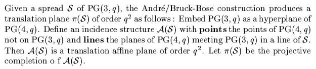

|
Finite Geometry Notes
|
Latin-Square Geometry:
Orthogonal Latin Squares as Skew Lines
-- From Error-Correcting Codes
Through Sphere Packings
To Simple Groups,
by Thomas M. Thompson,
Mathematical Association of America, 1983
"Packing finite projective spaces with disjoint subspaces has for many years been a topic of considerable interest in Galois Geometry. In particular, one studies partial spreads in a space PG(3,q), that is, collections of pairwise disjoint lines in PG(3,q): see Hirschfeld [8] for background. A set of r mutually skew lines for which any other line meets at least one line of the set will be referred to as a maximal partial spread (MPS) of size r.
An interesting combinatorial problem (which seems at first sight not at all related to partial spreads) is the determination of the pairs (s,t) for which a maximal set of t mutually orthogonal Latin squares of order s exist...."
-- Some new maximal sets of mutually orthogonal Latin squares,
Keywords: latin squares, MAXMOLS, partial spread, projective space, polar space
by P. Govaerts, D. Jungnickel, L. Storme, and J. A. Thas,
Designs, Codes, and Cryptography
29 (1-3), May-June-July 2003, pp. 141-147Mathematics Subject Classification: 05B15, 05B25, 05B40
These authors said, in early 2003, that spreads and orthogonal Latin squares seem "at first sight" unrelated. They of course did not mention my note (shown below) that pointed out such a relationship in December 1978. The earliest sources they cited for such a relationship are Jungnickel in 1984 and 1993.
Here are the details of my 1978 note.
We present two results -- one old, one new -- on the
geometry of Latin squares.
Result A (old):There exist n-1 mutually orthogonal nxn Latin squares if and only if there exists a finite projective plane with n2 + n + 1 lines (or, equivalently, an affine plane with n2 + n lines).Result A is well known. See, for instance, chapter 8 of Discrete Mathematics Using Latin Squares, C. F. Laywine and G. L. Mullen, Wiley Interscience, 1998, or Bose's [1938] Theorem (pdf). Result B (new):The six 4x4 Latin squares that have orthogonal Latin mates can be embedded in a set of thirty-five 4x4 arrays so that orthogonality in the set of arrays corresponds to skewness in the set of 35 lines of the finite projective space PG(3,2).Result B is apparently new, and should not be confused with result A. The closest thing to the diagrams of result B in the refereed literature seems to be the use of diagrams on page 774 of Design Theory, Volume 2, by T. Beth, D. Jungnickel, and H. Lenz, Cambridge U. Press, 1999, in proving Tarry's theorem on the nonexistence of two mutually orthogonal 6x6 Latin squares. The research note below shows how result B works. Note particularly that the 35-line projective space of result B differs from the 21-line projective plane of result A. Result B is, of course, highly special, being limited to 4x4 squares. This limitation should not prevent its use as an example in popular introductions to discrete mathematics. Indeed, the 4x4 case figured prominently (and exclusively) on the cover and in a two-page article in the August/September 2001 issue of the Mathematical Association of America's "Focus" newsletter. Naturally, a more general result than B is desirable; hence the problem stated in the 1978 research note below. Steven H. Cullinane
Orthogonality of Latin squares viewed as skewness of
lines. Dec. 1978.
Shown below is a way to embed the six order-4 Latin squares
that have orthogonal Latin mates in a set of 35 arrays so that
orthogonality in the set of arrays corresponds to skewness in the set
of 35 lines of PG(3,2). Each array yields a 3-set of diagrams
that show the lines separating complementary 2-subsets of
{0,1,2,3}; each diagram is the symmetric difference of the other
two. The 3-sets of diagrams correspond to the lines of
PG(3,2). Two arrays
are orthogonal iff their 3-sets of diagrams are disjoint, i.e. iff the
corresponding lines
of PG(3,2) are skew.
This is a new way of viewing orthogonality of
Latin squares, quite different from their relationship to projective
planes.
PROBLEM: To what extent can this result be
generalized?
For related material, see the web pages |
The apparent conflict between the 2003 paper by Jungnickel et al. and my 1978 note can be resolved as follows:
"The [1954-1964] André/Bruck-Bose construction yields a one-to-one correspondence between spreads of projective space and translation planes (special affine planes). If one feeds a partial spread into this construction, a net results. A net is a point-line geometry which is a natural weakening of an affine plane."
-- John Bamberg, Symplectic spreads
And it has long been known that affine planes are, as noted above, closely related to orthogonal Latin squares.
In other words, the 1954-1964 André/Bruck-Bose construction is the missing (missing, that is, according to Jungnickel, Thas, et al.) link between Latin-square orthogonality and projective-space skewness. Such an orthogonality-skewness link is shown rather more directly and clearly in my 1978 note.
(For details of the André/Bruck-Bose construction, see
Johannes André, Über nicht-Dessarguessche Ebenen mit transitiver Translationsgruppe, Math Z. 60, pp. 156-186, 1954, and
R. H. Bruck and R. C. Bose, The construction of translation planes from projective spaces, J. Algebra 1, pp. 85-102, 1964.The following may also be helpful:

-- From Flocks, ovals, and generalized quadrangles (ps), (Four lectures in Napoli, June 2000), by Maska Law and Tim Penttila)
For further background, here is material on finite geometry from the paper Symplectic spreads (pdf), 15 Sept. 2003, by Simeon Ball, John Bamberg, Michel Lavrauw, and Tim Penttila:
From Symplectic spreads (pdf):"First we give an overview of some definitions and theory of finite geometry, together with some results of the past which provide the context and background for our construction. A projective plane is an incidence structure of points and lines such that: (PP1) for every pair of distinct points there is a unique line which is incident with both of them; (PP2) every pair of distinct lines meet in a unique point; (PP3) there exist four distinct points with no three collinear (no three are incident with a common line). An affine plane is an incidence structure of points and lines such that: (AP1) for every pair of distinct points there is a unique line which is incident with both of them; (AP2) for any non-incident point-line pair p, L, there exists a unique line through p which has no point in common with L; (AP3) there exist three non-collinear points. In a projective or affine plane, a point P is a centre for a collineation phi if phi fixes every line incident with P. A line l is an axis of phi if phi fixes every point on l. It is standard knowledge that every non-identity collineation has at most one axis and at most one centre, and it has an axis if and only if it has a centre (see [7, Section 3.1.4]). A collineation which has a centre and axis which are incident with one another, is called an elation. A group of collineations H is called (P, l)-transitive if the subgroup of H consisting of those elements which have centre P and axis l, acts transitively on the non-fixed points of any line through P which is not equal to l. For two lines m and l, we say that H is (m, l)-transitive if H is (P, l)-transitive for all P on m. Dually, if P and Q are points, then we say that H is (P, Q)-transitive if H is (P, l)-transitive for every line l incident with Q. Let Gamma be a projective plane and suppose that Delta is an affine plane obtained by removing the line linfinity from Gamma. Then Delta is a translation plane if there exists a
R. H. Bruck in 1951 [4] introduced finite nets. A net
is a system of points and lines satisfying: References for Symplectic spreads (pdf): [1] A. A. Albert. On the collineation groups associated with twisted fields. In Calcutta Math. Soc. Golden Jubilee Commemoration Vol. (1958/ 59), Part II, pages 485-497. Calcutta Math. Soc., Calcutta, 1958/1959.[2] Johannes André. Über nicht-Desarguessche Ebenen mit transitiver Translationsgruppe. Math. Z., 60: 156-186, 1954. [3] L. Bader, W. M. Kantor, and G. Lunardon. Symplectic spreads from twisted fields. Boll. Un. Mat. Ital. A(7), 8(3): 383-389, 1994. [4] R. H. Bruck. Finite nets. I. Numerical invariants. Canadian J. Math., 3: 94-107, 1951. [5] R. H. Bruck. Finite nets. II. Uniqueness and imbedding. Pacific J. Math., 13: 421-457, 1963. [6] R. H. Bruck and R. C. Bose. The construction of translation planes from projective spaces. J. Algebra, 1: 85-102, 1964. [7] P. Dembowski. Finite geometries. Ergebnisse der Mathematik und ihrer Grenzgebiete, Band 44. Springer-Verlag, Berlin, 1968. [8] U. Dempwolff. Translation planes of order 27. Des. Codes Cryptogr., 4(2): 105-121, 1994. [9] Christoph Hering. Eine nicht-desarguessche zweifach transitive affine Ebene der Ordnung 27. Abh. Math. Sem. Univ. Hamburg, 34: 203-208, 1969/ 1970. [10] William M. Kantor. Commutative semifields and symplectic spreads. To appear in J. Algebra. [11] William M. Kantor. Strongly regular graphs defined by spreads. Israel J. Math., 41(4): 298-312, 1982. [12] T. G. Ostrom. Replaceable nets, net collineations, and net extensions. Canad. J. Math., 18: 666-672, 1966. [13] Chihiro Suetake. A new class of translation planes of order [14] Fam Khyu T'ep. Irreducible J-decompositions of the Lie algebras [15] J. A. Thas. Ovoids and spreads of finite classical polar spaces. Geom. Dedicata, 10(1-4): 135-143, 1981. [16] J. A. Thas. Old and new results on spreads and ovoids of finite classical polar spaces. In Combinatorics '90 (Gaeta, 1990), volume 52 of Ann. Discrete Math., pages 529-544. North-Holland, Amsterdam, 1992. [17] J. A. Thas. Ovoids, spreads and m-systems of finite classical polar spaces. In Surveys in combinatorics, 2001 (Sussex), volume 288 of London Math. Soc. Lecture Note Ser., pages 241-267. Cambridge Univ. Press, Cambridge, 2001. |
See also further details from the paper cited in the epigraph--
|
From Some
new maximal sets of "Let us briefly sketch the connection between partial spreads in PG(3,q) and sets of mutually orthogonal Latin squares of order q2. Any r mutually skew lines in PG(3,q) may be viewed as a collection of r pairwise disjoint subgroups of order q2 in the additive group of the vector space V = V(4,q) (meaning, of course, that any two of these subgroups intersect trivially). This is a particular example of a so-called partial congruence partition (PCP) and therefore leads to a (translation) net of order s = q2 and degree r by taking the vectors in V as points and all the translates of the specified r subgroups as lines, cf. [9] or [2]. If the given partial spread is actually maximal, one may hope that the associated net is likewise maximal, resulting in t = r - 2 MAXMOLS(s), s = q2. This approach has been used successfully by Jungnickel [10, 11]. However, in general, the associated net may well be extendable; it is easily seen that this happens if and only if the net admits a transversal, i.e., a set of s points meeting every line of the net in a unique point. In the present note, we will use maximal partial spreads of size r in PG(3,4)\PG(3,2) to construct transversal-free translation nets of degree r + 3; this approach will give our new examples of MAXMOLS(16)." References for 1. D. Bedford and R. M. Whitaker, New and old values for
maximal MOLS (n), Ars Comb., Vol. 54 (2000), pp. 255-258. |
Further sources of material on
latin-square orthogonality
and projective skewness
Godsil on Spreads
For the use of the term "partial spreads" to mean sets of affine
parallel classes (as interpreted within graph theory), see
Partial spreads (ps),
a note by Chris Godsil:
"Let Z be a complete graph on n2 vertices. A parallel
class in Z is a spanning subgraph isomorphic to nKn.
We say two parallel classes S1 and S2
are orthogonal if they have no edges in common....
A partial spread is a set of pairwise orthogonal parallel
classes."
This informal note has no references. The way the note uses the
terms "partial spread" and "orthogonal" is directly related to my 1978
note. Historians of mathematics can determine whether Godsil is
the first to use these terms with these meanings.
Background for Godsil's note:
Strongly
Regular Graphs (ps),
by Peter J. Cameron (draft of a survey article), and
two references cited by Cameron:
Mellinger on Spreads
Various publications of Keith E. Mellinger (2001-2004) detail the close relationship between finite translation planes and spreads.
Book on Translation Planes and Spreads
See Foundations of Translation Planes (2001), by M. Biliotti, V. Jha, and N. L. Johnson, for an extensive treatment of how spreads and translation planes are related.